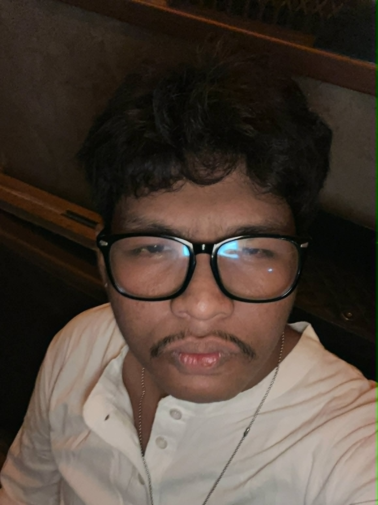
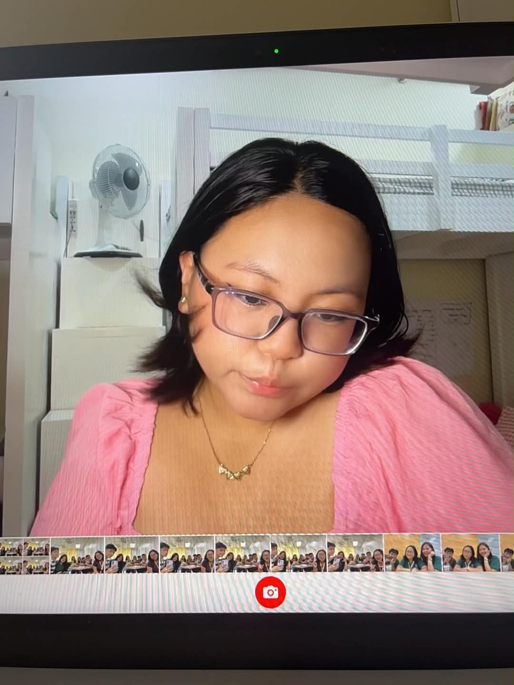
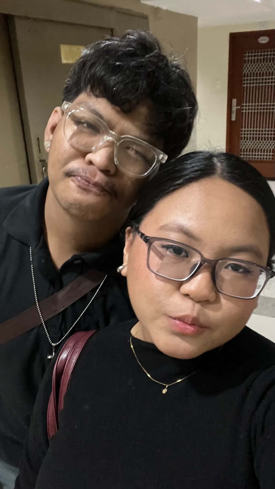
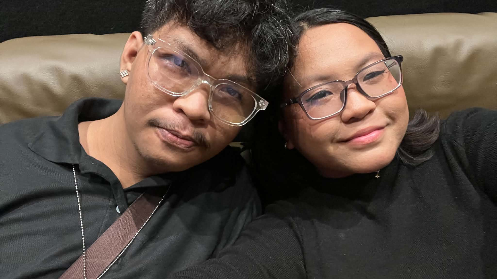
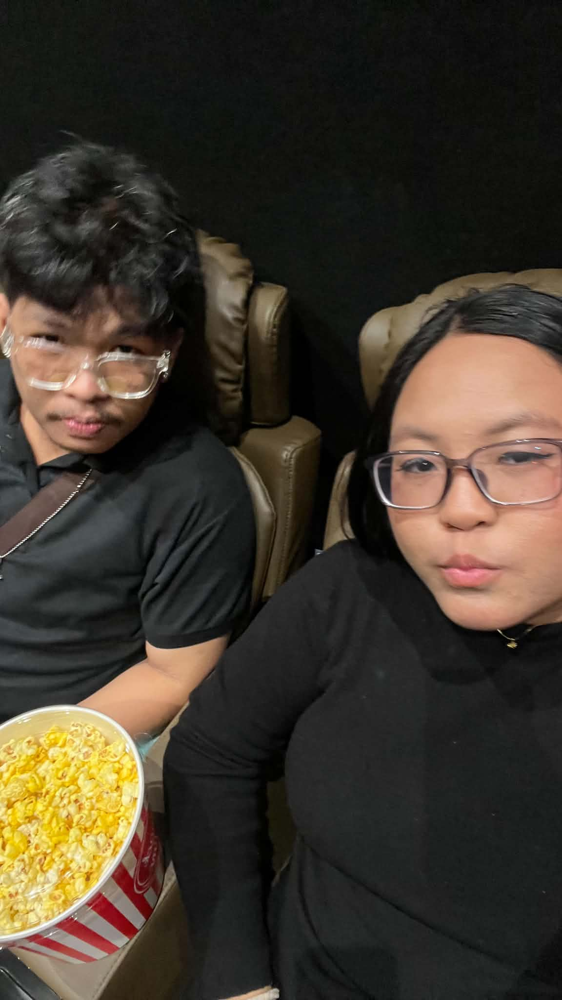
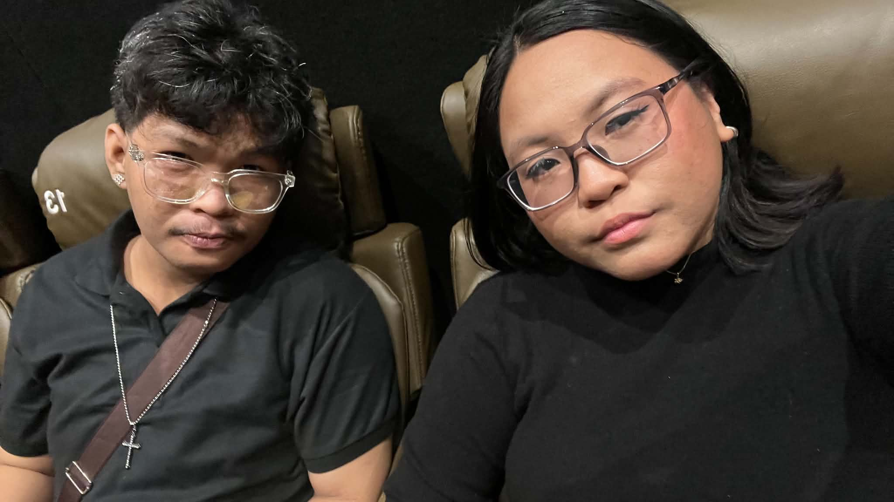

black, grey, white
summer
iced coffee, hot choco, pepsi
adobo, lasagna, carbonara, bicol express, fried chicken, buldak

pink
rainy
mango shake, iced coffee
ice cream, tinola, popcorn, malatang, sushi
first anniversary




happy first anniversary.
it feels unreal that an entire year has passed since we started this journey together. when i look back on everything we've shared, all i can feel is gratitude. i am so thankful that life brought me to you, because meeting you has been one of the greatest blessings i have ever received. out of everyone in this world, i am so glad that i get to call you my girlfriend.
thank you for every little thing you've done for me. thank you for every moment you stayed by my side, every time you listened to me, every time you comforted me, and every time you believed in me when i struggled to believe in myself. you've always had my back, no matter what life has thrown at us. knowing that i have someone like you beside me gives me a kind of peace that i never knew i needed.
what makes me love you so much isn't just everything you do for me. it's who you are. you're one of the most lovable people i've ever known. your kindness is effortless, your heart is so gentle, and your humor never fails to make even ordinary moments feel special. i love how witty you are, how you can make me laugh without even trying, and how you always know how to make me feel at home. every part of your personality makes me fall in love with you all over again.
there are so many times when i haven't been the boyfriend you deserve. i've made mistakes. i've hurt you. i've fallen short more times than i wish i ever had. yet somehow, you've continued to choose me. you've forgiven me even when i knew i didn't deserve it. you've continued to love me despite all of my flaws, and i will never be able to fully put into words how much that means to me. your love has shown me a kind of patience and grace that i hope i can spend the rest of my life living up to.
i know i'm not perfect, and i never will be. but i want you to know that i will never stop trying to become better for you, for us, and for myself. every single day, i want to be a better boyfriend than i was yesterday. i want to listen better, understand you better, love you better, and support you better. i don't want to settle for who i am today when i know i can become someone who loves you even more completely tomorrow. i'll keep choosing that growth every day, for as long as i'm alive.
i hope that as we continue growing older, we never stop growing together. i hope we keep encouraging each other, celebrating every victory, carrying each other's burdens, and reminding each other that neither of us has to face this life alone. i want to be there through every dream, every challenge, every laugh, every tear, and every chapter that waits for us.
when i imagine my future, you're in every part of it. you're the person i want to celebrate with when life is good and the person i want to hold onto when life becomes difficult. i don't want a love that's only there when things are easy. i want the kind of love that chooses each other every single day, even when life tests us, and i believe that's the kind of love we're building together.
thank you for loving me through my imperfections. thank you for being patient with me. thank you for seeing something worth loving in me, even when i struggled to see it myself. most of all, thank you for simply being you. there is nobody else i would rather spend this life with.
one year with you has been the happiest year of my life. if i had the chance to live it all over again, i would still choose you every single time.
happy first anniversary, my love. i loved you yesterday, i love you today, and i'll keep loving you tomorrow, and every day after that, for as long as we're given together.
forever yours.